うさ界で2022年末公開、衝撃の映画。
なんと主要うさが初回30秒と後半5分しか出演しない新たな試み。
うさ界映画館総動員数最高記録。
映画終了後のストリーミング配信視聴記録過去最高を記録。
本記事では映画のあらすじを14話に分けてご紹介。
最後には監督コメント付。
English Ver.⇒
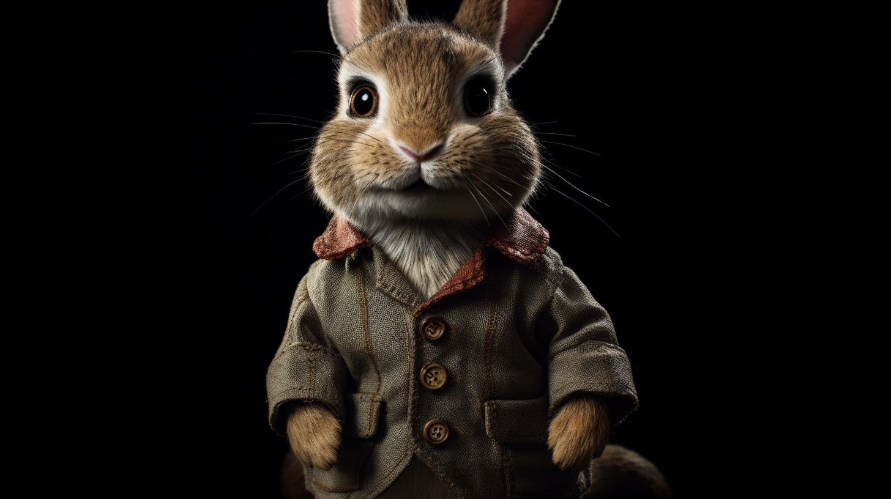
第1話： なんてことだ・・あの愛しいあの方のご婚約が決まってしまうとは・・
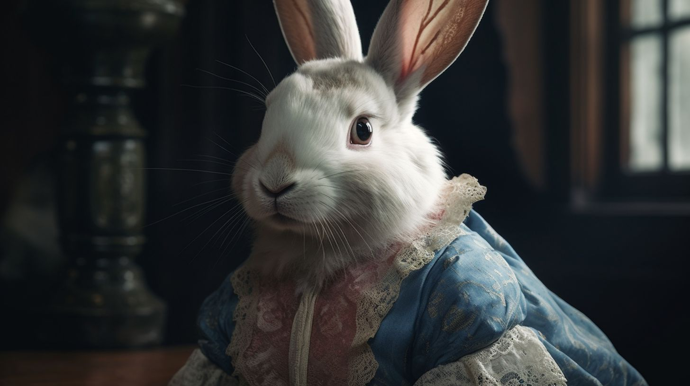
第2話： あなたは私の姪っ子を幸せには出来ないわ。 姪っ子のために私が選んだ婚約者とは天と地の差なのよ。
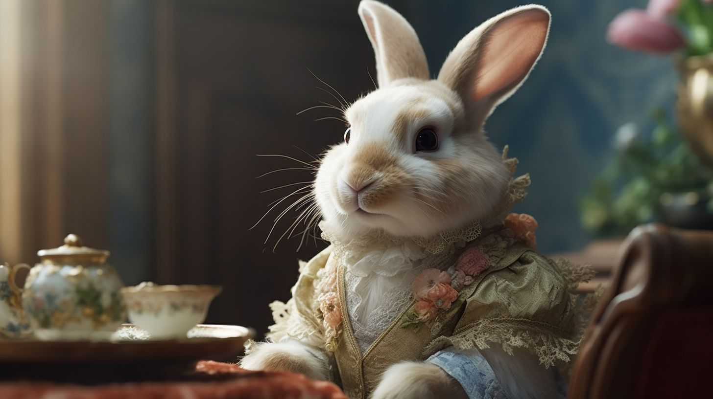
第3話： あの子が先に婚約が決まるなんて・・ 私は毎日こんなに花嫁修業を頑張っているのにっ！ お母様も従姉妹のあの子ばかり気にかけて、娘の私のことなんてどうでもいいのね！
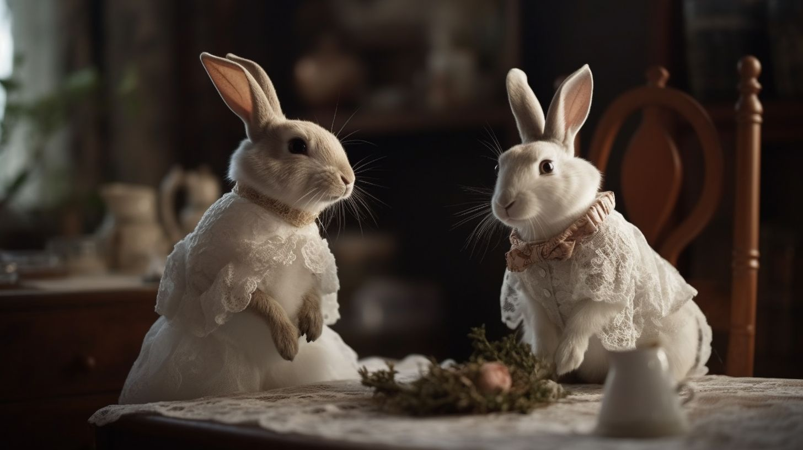
第4話： お嬢様？近頃は大好きなチモシーのコンフィズリーも召し上がらないままお部屋に引きこもってしまって・・ねぇ？ お嬢様は他に愛する方がいらっしゃるのに、なんて可哀想なお立場に・
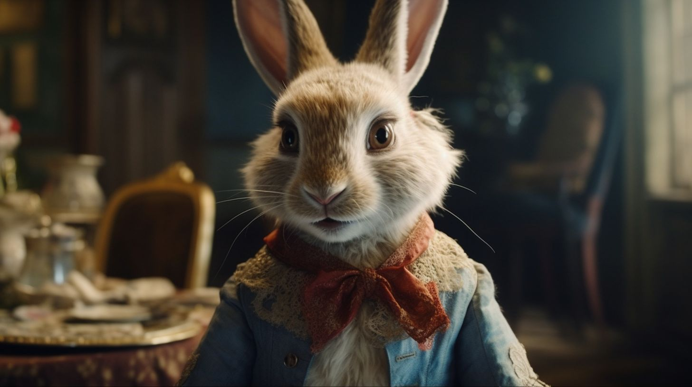
第5話： 婚約者に伝えておくれ。我が家は高価なアクセサリーもシルクのドレスも、みんな好きなものを揃えられるんだ。僕はいつでも僕のお嫁さんになった君を待っているよ、とね。
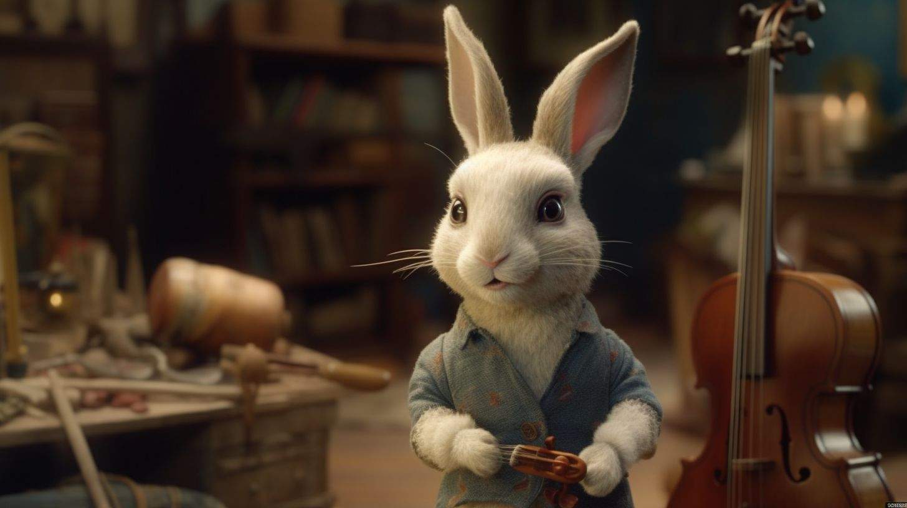
第6話： 披露宴のオーケストラの準備もバッチリよ！ 若旦那様のお気に入りの演奏者たちだけを集めたんだもの。キャンセルは出来ないわね。
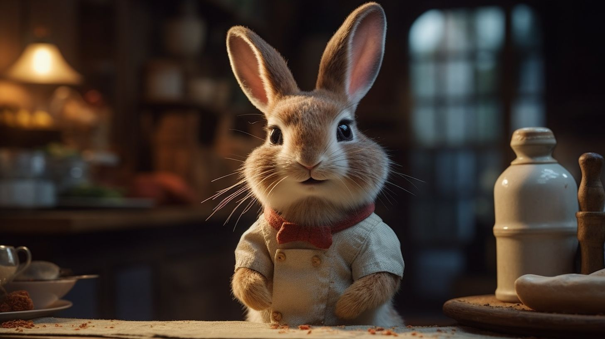
第7話： 披露宴のケーキの注文？ご婚約の噂を聞く前に予約があったね うさの耳より高いケーキのご注文だよ。 色は白をベースに旦那様の好きなブルーと聞いているよ。 お嬢様のご意見は注文に入っていなかったかな。
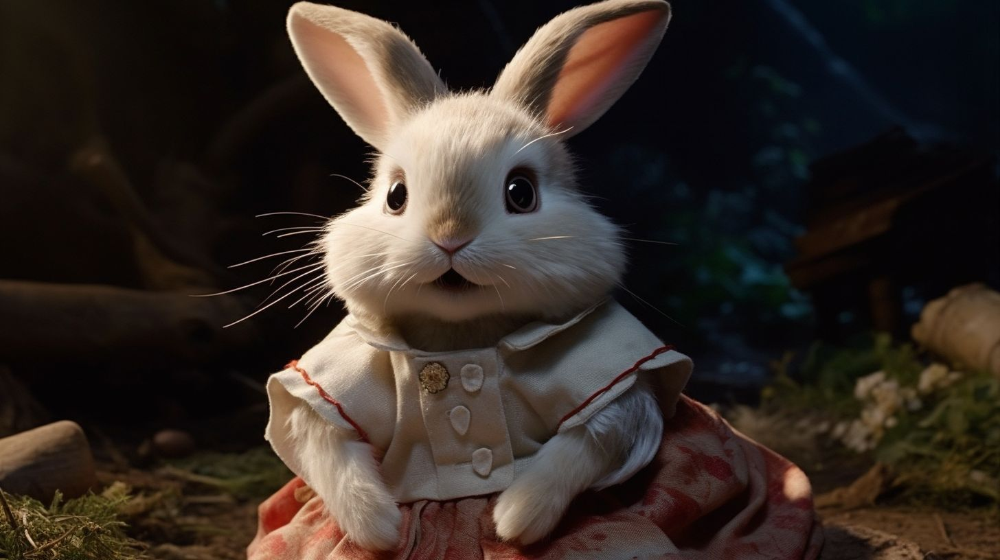
第8話： お嬢様は婚約者の方とは結婚されませんよ！ あたいはお手伝い係としてずっと側で見ていたんですから！お嬢様は昔から幼なじみのあの方と相思相愛の仲だったことを！ あたいはお嬢様のためなら何でもするわ！
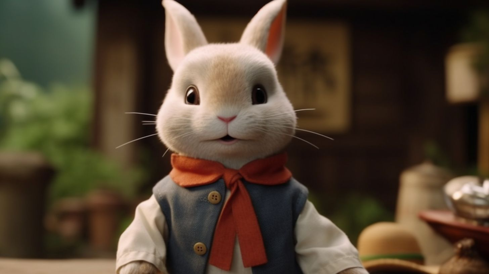
第9話： そりゃぁ婚約者の方なら生活に不自由はしないだろうね。 あの辺りの敷地はほとんどあの婚約者のものと聞いているよ。 僕は馬車の馬くんの世話役で一緒に色々な場所に行くから、婚約者の噂は良いものも悪いものも耳にするね。
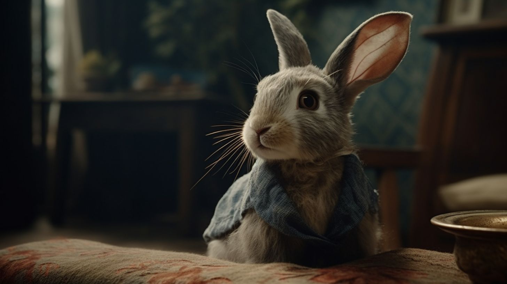
第10話： わたしかい？わたしはあの子がお嬢様と幸せになってくれたら嬉しいけれど、身分が違うからねぇ・・ あの子はお嬢様のあのお話を耳にしてからこの家を出ていってしまったよ・・
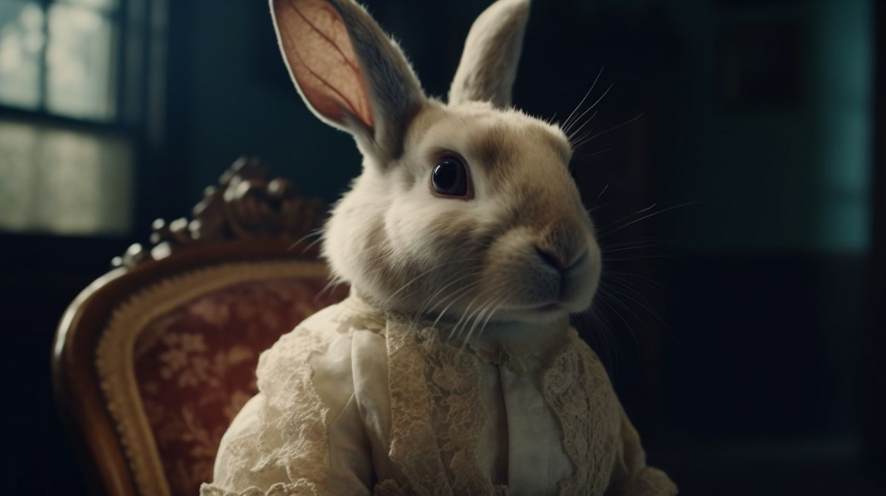
第11話： 娘よ、婚約者の何が不満だと言うんだい。 結婚式当日になってまでまだそんな事を言うのかい。 お相手方はもうチャペルについている頃だよ。
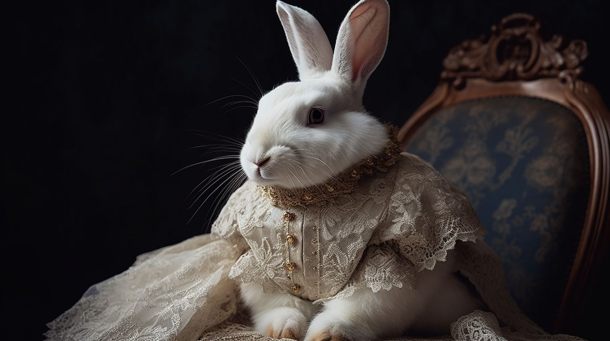
第12話： わたくしも気持ちは察するに余るわ。けれど娘よ、苦労をしてほしくないからお相手方と話をつけたのよ。 将来に不安がない方があなたも、そのうち産まれる跡継ぎにも良いことでしょう。 あなたが今の生活を変えることなんて出来はしないわ。
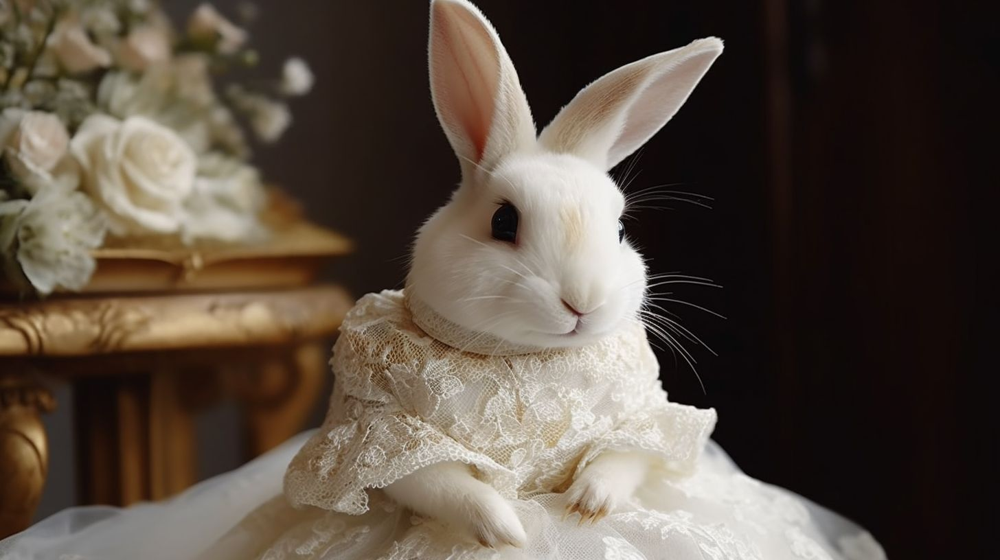
第13話： 父上、母上、わたくしはこの結婚はご遠慮いたします。 苦労は承知、あの方の元へ参ります。 もう二度と、この敷地に足を踏み入れることは致しません。 今まで私を育てていただき感謝しております。 これからはあの方と共に苦労を重ね、幸せを噛み締めたいと思います。
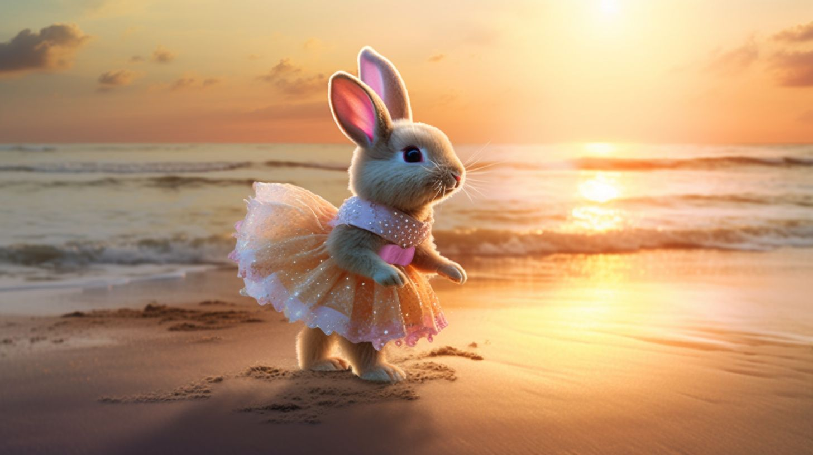
第14話：
今まで日課だった毛並みのホワイトニングも、チモシーを使った習い事もやめてしまったけれど、あの方のもとへ行けるなら私は悔いはない
あの方はいつもあの大切な場所で待っていた
もう二度と待つことはさせない
今度は私が家で待つの
そしてさようなら、いままでの私
[終]
2週間に渡り、あらすじをお送りした「ラブ・イン・ザ・ウサパレス」を監督したジェームズ・ラヴィロンだ。決してあの辺のボスじゃないぞ。 世話人どもよ。うさの世界のドラマはいかがでしたかな。ウサデミー賞作品・監督・演出うさ賞を受賞したこの作品をもっと見たければ、うさの世界へ来ることだ。